攻略大全 / 心金 / 魂银（详细图文） / 地图总览
收尾：10号道路 → 游走的宝可梦
第 30 节 · 通关后 · 途经 华蓝洞窟、25号道路、大木研究所、西尔佛公司、宝可梦爷爷的家
10号道路（北侧）

在你拿到绿色徽章的这段时间里，关都三只传说之鸟中的最后一只出现在了10号道路的发电厂外面。
对战闪电鸟
先用岩石和冰属性攻击快速削减它的体力，再用虫、草、格斗、飞行、钢属性招式进一步削弱它。可以考虑让它睡着来限制行动，也记得带些回复道具。
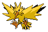
闪电鸟Lv.50 · 电 / 飞行↓ 下一站：华蓝市
华蓝市
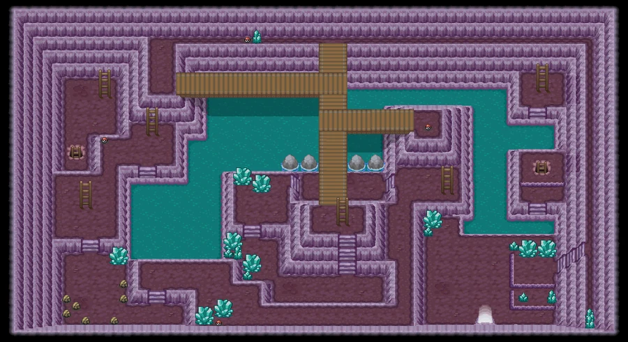
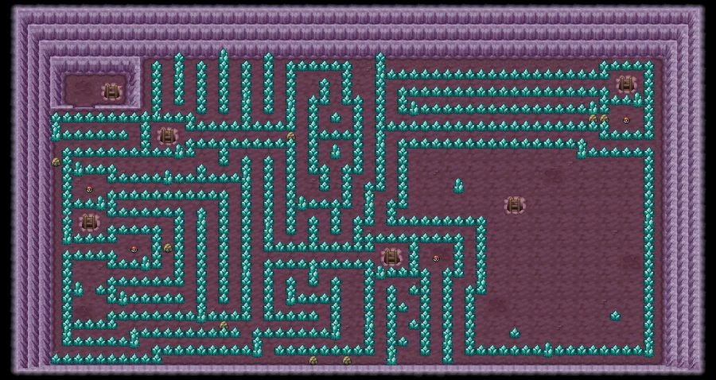
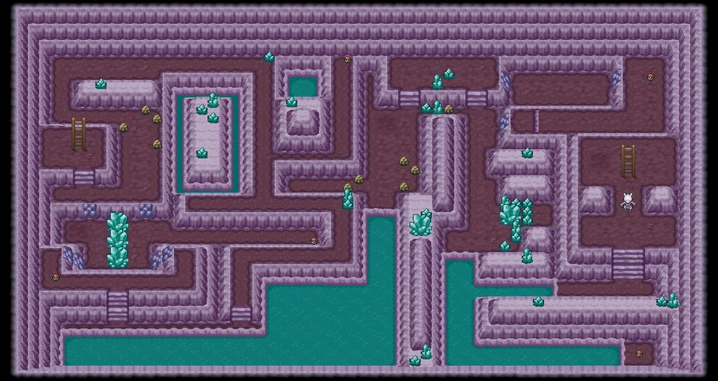
只有集齐全部 16 枚徽章、证明了实力的训练家，才能进入华蓝市西北边缘的神秘之地华蓝洞窟。要去那里，得从24号道路往南冲浪。
华蓝洞窟
神秘的华蓝洞窟是一大片洞窟网，一直延伸到华蓝市外的山区深处。没有冲浪、碎岩和攀岩根本无法在漆黑的洞窟里前进，没有闪光也很难走。红莲岛火山喷发之前，岛上宝可梦屋里那只经过基因改造的宝可梦逃出设施后，就躲到了这里。
可遇到的宝可梦
- 顽皮雷弹洞窟 · Lv.40 · 5%
- 果然翁洞窟 · Lv.37 · 5%
 豪力洞窟 · Lv.39-40 · 早 24% · 日 24% · 夜 6%
豪力洞窟 · Lv.39-40 · 早 24% · 日 24% · 夜 6% 派拉斯特洞窟 · Lv.38 · 早 20% · 日 20% · 夜 10%
派拉斯特洞窟 · Lv.38 · 早 20% · 日 20% · 夜 10% 火暴猴仅心金洞窟 · Lv.38-39 · 早 14% · 日 14% · 夜 0%
火暴猴仅心金洞窟 · Lv.38-39 · 早 14% · 日 14% · 夜 0%- 火暴猴仅心金洞窟 · Lv.39 · 早 0% · 日 0% · 夜 4%
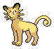
猫老大仅魂银洞窟 · Lv.38-39 · 早 14% · 日 14% · 夜 0%- 猫老大仅魂银洞窟 · Lv.39 · 早 0% · 日 0% · 夜 4%
 三合一磁怪洞窟 · Lv.39-40 · 早 11% · 日 11% · 夜 0%
三合一磁怪洞窟 · Lv.39-40 · 早 11% · 日 11% · 夜 0%- 三合一磁怪洞窟 · Lv.40 · 早 0% · 日 0% · 夜 10%
 百变怪洞窟 · Lv.39-40 · 早 11% · 日 11% · 夜 0%
百变怪洞窟 · Lv.39-40 · 早 11% · 日 11% · 夜 0%- 百变怪洞窟 · Lv.39 · 早 0% · 日 0% · 夜 10%
 大嘴蝠洞窟 · Lv.38 · 早 10% · 日 10% · 夜 0%
大嘴蝠洞窟 · Lv.38 · 早 10% · 日 10% · 夜 0%- 大嘴蝠洞窟 · Lv.38-39 · 早 0% · 日 0% · 夜 50%
- 冲浪
 可达鸭冲浪 · Lv.35-40 · 90%
可达鸭冲浪 · Lv.35-40 · 90% 哥达鸭冲浪 · Lv.40 · 10%
哥达鸭冲浪 · Lv.40 · 10%- 钓鱼
 鲤鱼王破旧钓竿 · Lv.10 · 100%
鲤鱼王破旧钓竿 · Lv.10 · 100% 蚊香蝌蚪好钓竿 · Lv.20 · 45%
蚊香蝌蚪好钓竿 · Lv.20 · 45% 角金鱼好钓竿 · Lv.20 · 40%
角金鱼好钓竿 · Lv.20 · 40%- 鲤鱼王好钓竿 · Lv.20 · 15%
- 蚊香蝌蚪厉害钓竿 · Lv.40 · 40%
 蚊香君厉害钓竿 · Lv.40 · 30%
蚊香君厉害钓竿 · Lv.40 · 30% 暴鲤龙厉害钓竿 · Lv.40 · 30%
暴鲤龙厉害钓竿 · Lv.40 · 30%- 碎岩
 小拳石碎岩 · Lv.22-24 · 80%
小拳石碎岩 · Lv.22-24 · 80% 隆隆石碎岩 · Lv.26-30 · 20%
隆隆石碎岩 · Lv.26-30 · 20%- 特殊
 幕下力士丰缘音乐 · Lv.39-40 · 20%
幕下力士丰缘音乐 · Lv.39-40 · 20% 阿勃梭鲁丰缘音乐 · Lv.38 · 20%
阿勃梭鲁丰缘音乐 · Lv.38 · 20% 铃铛响神奥音乐 · Lv.39-40 · 20%
铃铛响神奥音乐 · Lv.39-40 · 20% 铜镜怪神奥音乐 · Lv.38 · 20%
铜镜怪神奥音乐 · Lv.38 · 20%- 大嘴蝠洞窟 · Lv.41 · 早 10% · 日 10% · 夜 0%
- 大嘴蝠洞窟 · Lv.41-42 · 早 0% · 日 0% · 夜 20%
- 派拉斯特洞窟 · Lv.40 · 20%
 勇基拉洞窟 · Lv.42 · 20%
勇基拉洞窟 · Lv.42 · 20%- 豪力洞窟 · Lv.39, 41-42 · 早 20% · 日 20% · 夜 0%
- 豪力洞窟 · Lv.39 · 早 0% · 日 0% · 夜 10%
- 三合一磁怪洞窟 · Lv.41 · 10%
- 顽皮雷弹洞窟 · Lv.41 · 5%
- 百变怪洞窟 · Lv.42 · 10%
- 果然翁洞窟 · Lv.42 · 5%
- 钓鱼
- 鲤鱼王破旧钓竿 · Lv.10 · 100%
- 蚊香蝌蚪好钓竿 · Lv.20 · 45%
- 角金鱼好钓竿 · Lv.20 · 40%
- 鲤鱼王好钓竿 · Lv.20 · 15%
- 蚊香蝌蚪厉害钓竿 · Lv.40 · 40%
- 蚊香君厉害钓竿 · Lv.40 · 30%
- 暴鲤龙厉害钓竿 · Lv.40 · 30%
- 特殊
- 幕下力士丰缘音乐 · Lv.41-42 · 20%
- 阿勃梭鲁丰缘音乐 · Lv.39, 41 · 20%
- 铃铛响神奥音乐 · Lv.41-42 · 20%
- 铜镜怪神奥音乐 · Lv.39, 41 · 20%
- 派拉斯特洞窟 · Lv.45, 47 · 25%
- 勇基拉洞窟 · Lv.46 · 20%
- 三合一磁怪洞窟 · Lv.45, 47 · 15%
- 大嘴蝠洞窟 · Lv.47 · 10%
- 豪力洞窟 · Lv.45 · 10%
- 百变怪洞窟 · Lv.45 · 10%
- 顽皮雷弹洞窟 · Lv.46 · 5%
- 果然翁洞窟 · Lv.49 · 5%
- 冲浪
- 可达鸭冲浪 · Lv.35-40 · 90%
- 哥达鸭冲浪 · Lv.40 · 10%
- 钓鱼
- 鲤鱼王破旧钓竿 · Lv.10 · 100%
- 蚊香蝌蚪好钓竿 · Lv.20 · 45%
- 角金鱼好钓竿 · Lv.20 · 40%
- 鲤鱼王好钓竿 · Lv.20 · 15%
- 蚊香蝌蚪厉害钓竿 · Lv.40 · 40%
- 蚊香君厉害钓竿 · Lv.40 · 30%
- 暴鲤龙厉害钓竿 · Lv.40 · 30%
- 碎岩
- 小拳石碎岩 · Lv.22-24 · 80%
- 隆隆石碎岩 · Lv.26-30 · 20%
- 特殊
- 幕下力士丰缘音乐 · Lv.45 · 20%
- 阿勃梭鲁丰缘音乐 · Lv.45, 47 · 20%
- 铃铛响神奥音乐 · Lv.45 · 20%
- 铜镜怪神奥音乐 · Lv.45, 47 · 20%
道具
- 1F
 金珠西边两个梯子之间
金珠西边两个梯子之间 厉害伤药西南区域，被三块可敲碎的岩石围着的墙上（隐藏道具，需要特殊能力）
厉害伤药西南区域，被三块可敲碎的岩石围着的墙上（隐藏道具，需要特殊能力） 全复药南偏西南区域，两块大水晶旁边
全复药南偏西南区域，两块大水晶旁边 活力碎片西南区域，大水晶旁边的一块小水晶上（隐藏道具）
活力碎片西南区域，大水晶旁边的一块小水晶上（隐藏道具） ＰＰ多项全补剂上层，桥的东端
ＰＰ多项全补剂上层，桥的东端- 海潮薰香上层，桥的西北边
 神奇糖果上层，东南角两块水晶中北边那块上（隐藏道具）
神奇糖果上层，东南角两块水晶中北边那块上（隐藏道具）- 2F
- 招式学习器24（十万伏特）东北，小路尽头（需要特殊能力）
 ＰＰ提升剂 ×2西侧，中西部梯子往北几步（需要特殊能力）
ＰＰ提升剂 ×2西侧，中西部梯子往北几步（需要特殊能力）
东南，大空地东南角那块孤零零的水晶上（隐藏道具） 特防增强剂东南，大空地里，梯子的东偏东南（隐藏道具）
特防增强剂东南，大空地里，梯子的东偏东南（隐藏道具） 万灵药东南，大空地里，靠近东北角（隐藏道具）
万灵药东南，大空地里，靠近东北角（隐藏道具）- 大珍珠东南，大空地里，西南边那块孤零零的水晶附近（隐藏道具）
 高级球 ×2东南，大空地里，最北边那块孤零零的水晶东北边（隐藏道具）
高级球 ×2东南，大空地里，最北边那块孤零零的水晶东北边（隐藏道具）
西北，中西部区域- 奇异薰香西北，最南边的梯子往东几步（需要特殊能力）
 攻击增强剂西北，沿西墙那条小路的北端（隐藏道具，需要特殊能力）
攻击增强剂西北，沿西墙那条小路的北端（隐藏道具，需要特殊能力）- B1F
- 高级球 ×2西南区域，岩脊上
B1F 中央附近，五块可敲碎的岩石西边（隐藏道具，需要特殊能力）  暗之石中西部区域，三块大水晶东边（需要攀岩）
暗之石中西部区域，三块大水晶东边（需要攀岩） 活力块 ×2西北区域，两块可敲碎的岩石后面（隐藏道具，需要特殊能力）
活力块 ×2西北区域，两块可敲碎的岩石后面（隐藏道具，需要特殊能力）
中北部区域的死胡同- 金珠北偏东北区域，两块小水晶中东边那块上（隐藏道具，需要特殊能力）
- 电力增幅器东北角（需要攀岩）
 黑色污泥东南角（需要特殊能力）
黑色污泥东南角（需要特殊能力）
1F
往北走，用冲浪到东北角，爬上梯子绕个小弯路。
2F（东北）
沿小路走，用碎岩敲碎两块岩石。拿招式学习器24（十万伏特），然后往回走，回到 1F。
1F
冲浪往西，从水里上岸。拿附近的金珠，然后爬上西南边的梯子。
2F（西侧）
用碎岩，沿分岔的小路走到尽头拿ＰＰ提升剂。回到梯子，回 1F。
1F
往南，再往东，在两块水晶旁边找到全复药。转向北，爬上最近的梯子。
2F（东南）
在这片开阔的区域搜一搜散落的道具，然后回到 1F。
1F
往西从桥下经过，然后转向南。绕一圈爬上楼梯到桥上。往北走，右转能拿到悬崖上的ＰＰ多项全补剂，左转能拿到北墙边窄路上的海潮薰香。桥的北端通往这条窄路的另一头，是去出口的捷径。回到桥的南端，爬上梯子。
2F（西北）
往西走到岔路口；往南，再往东敲碎两块岩石拿奇异薰香。回到第一个往东的转角，沿西南的隧道到西南角，再沿西墙往北。第一个路口右转，又能拿到一个高级球。回到第一个岔路口，这次往北，然后往东。沿着曲折的隧道走到西北角，爬下梯子。
1F（西北）
爬下下一个梯子到 B1F。
B1F
往南走，用攀岩拿高级球，然后往东，再用一次攀岩拿东边死胡同里的暗之石。再用攀岩继续往北，经过一堆可敲碎的岩石后往东。转向南，走第一条往东的路拿活力块。继续往南到水边，用冲浪往东北。越过有两块水晶的岩脊，用攀岩拿东北角的电力增幅器。跳下附近的台阶，再用攀岩继续往南。用冲浪拿东南角的黑色污泥，然后爬上中东部小山的楼梯，就能见到这只基因宝可梦了。
对战超梦
先用虫、幽灵、恶属性攻击快速削减它的体力，再用格斗和超能力属性招式进一步削弱它。可以考虑用睡眠、麻痹之类的异常状态限制它的行动，也记得带些回复道具。
对战结束后，用离洞绳，或者爬上附近的梯子。
1F
跳下台阶，用冲浪回到入口。
↓ 下一站：25号道路
25号道路
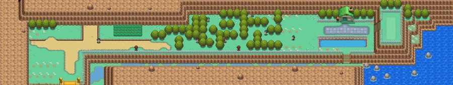
相邻← 24号道路
北风平息
水君先后在圆朱市、湛蓝市、42号道路、枯叶市和14号道路短暂现身，最后在华蓝海角结束了寻找合适环境的旅程。正如米纳奇说过的，它似乎喜欢「北方某个靠水的丘陵地带」。
你走到楼梯顶上时，水君发出一声长鸣，米纳奇也刚好赶到。他气喘吁吁，不情愿地承认自己比不上你。他说从在烧焦塔第一次见到你起，就感觉水君会选择你。他鼓励你去面对这只传说的宝可梦，说它正在等待一位值得信赖、能成为伙伴的训练家来和它对战。
对战水君
先用草和电属性攻击快速削减它的体力，再用火、水、冰、钢属性招式进一步削弱它。可以考虑用睡眠、麻痹之类的异常状态限制它的行动，也记得带些回复道具。
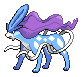
水君Lv.40 · 水对战结束后，米纳奇惊叹自己从没见过这么激烈的对战。他说自己毫无遗憾，向你和水君道别。
↓ 下一站：真新镇
真新镇
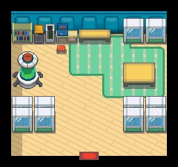
可遇到的宝可梦
- 赠送的宝可梦
- 妙蛙种子赠送 · Lv.5 · 1 只
 小火龙赠送 · Lv.5 · 1 只
小火龙赠送 · Lv.5 · 1 只- 杰尼龟赠送 · Lv.5 · 1 只
大木研究所
打败 赤红后，回到真新镇和
赤红后，回到真新镇和 大木博士说话。他听说了你的很多事，想送你一份礼物来奖励你的努力。他指着身后桌上的三个精灵球，让你从三只在关都很少见的宝可梦里选一只。
大木博士说话。他听说了你的很多事，想送你一份礼物来奖励你的努力。他指着身后桌上的三个精灵球，让你从三只在关都很少见的宝可梦里选一只。
| 草 | 毒 | 火 | 水 | ||
| 草 | 毒 | 火 | 水 | ||
| 喷火龙 | |||||
| 草 | 毒 | 火 | 飞行 | 水 | |
↓ 下一站：金黄市
金黄市

可遇到的宝可梦
- 赠送的宝可梦
- 木守宫赠送 · Lv.5 · 1 只（必须选「绿色的石头」）
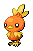
火稚鸡赠送 · Lv.5 · 1 只（必须选「红色的石头」）- 水跃鱼赠送 · Lv.5 · 1 只（必须选「蓝色的石头」）
- 特殊的宝可梦
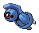
铁哑铃交换 · 与换出去的宝可梦同等级 · 1 只（在深灰市和大吾说过话之后）
西尔佛公司
三块石头
打败赤红后，回到金黄市去西尔佛公司。在里面东侧的服务台附近会找到大吾。他正好打完电话，很快就注意到了你。看到你带着图鉴，他明白你也在寻找宝可梦，觉得自己能帮上忙。他问你一个问题：「假设你面前有几块石头，你会选哪种颜色？」你的回答（绿色、红色或蓝色的石头）决定了他会送你家乡丰缘地区三只宝可梦中的哪一只。
| 草 | 火 | 水 | |||
| 森林蜥蜴 | 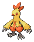 力壮鸡 | 沼跃鱼 | |||
| 草 | 火 | 格斗 | 水 | 地面 | |
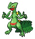 蜥蜴王 | 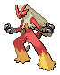 火焰鸡 | 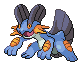 巨沼怪 | |||
| 草 | 火 | 格斗 | 水 | 地面 | |
他嘱咐你好好照顾这只年幼的宝可梦，然后离开了。
↓ 下一站：深灰市
深灰市
深灰科学博物馆
在西尔佛公司和大吾说过话后，去深灰市再见他一次。去深灰科学博物馆，会看到他正全神贯注地看展品，自言自语地说着夜空中闪耀的星星。
↓ 下一站：金黄市
金黄市
西尔佛公司
交换时间
在深灰市和大吾说过话后，回到西尔佛公司，会发现他已经先到了，现在站在入口的雕像附近。和他说话，得知他想交换宝可梦。他愿意用自己的铁哑铃换一只佛烈托斯。佛烈托斯野外找不到，但它进化前的榛果球用头锤撞树时很常见。他的铁哑铃携带着觉醒之石。
↓ 下一站：30号道路
30号道路
道具
- 靛蓝色宝珠仅心金东北边的房子，从大木博士那里得到关都御三家之后，由宝可梦爷爷给予
- 朱红色宝珠仅魂银东北边的房子，从大木博士那里得到关都御三家之后，由宝可梦爷爷给予
宝可梦爷爷的家
从大木博士那里得到御三家后，回到30号道路拜访宝可梦爷爷。你一进门，他就说有东西想给你，正要给大木博士发邮件。他解释说这是一位丰缘的朋友送来的，然后从角落的柜子里取出靛蓝色宝珠（心金）/朱红色宝珠（魂银）。他接着说，这颗宝石和湛蓝市另一边的古代遗迹有某种联系，但能到达那里的训练家很少。大木博士很看重你，所以宝可梦爷爷相信你能解开宝珠和遗迹的秘密。
↓ 下一站：游走（城都）
游走（城都）
从圆朱市的烧焦塔逃走后，传说的神兽们开始在原野上奔跑。水君踏上了横跨城都和关都的独自旅程，雷公和炎帝则开始在城都地区游走。每当你移动到别的区域，它们都会跑到另一条道路上。它们还会一有机会就逃离战斗，所以带有阻止逃走特性的宝可梦特别有用。能抢先用让对手睡着的招式的高速宝可梦也很有帮助，否则两只神兽都能用吼叫逃走。在对战中见过它们之后，宝可装置的地图会追踪它们的动向。如果把它们打倒了，登上殿堂后它们会重新出现在烧焦塔；必须在那里和它们互动，它们才会重新开始游走。
对战雷公
让雷公无法逃走后，先用地面属性攻击快速削减它的体力，再用飞行、电、钢属性招式进一步削弱它。
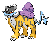
雷公Lv.40 · 电对战炎帝
让炎帝无法逃走后，先用水、岩石、地面属性攻击快速削减它的体力，再用虫、草、火、冰、钢属性招式进一步削弱它。
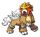
炎帝Lv.40 · 火↓ 下一站：游走（关都）
游走（关都）
在枯叶市见过大吾后，一只无限宝可梦开始在关都各地游走。每当你移动到别的区域，它都会跑到另一条道路上。它也会一有机会就逃离战斗，所以带有阻止逃走特性的宝可梦特别有用。能抢先用催眠术之类异常状态招式的高速宝可梦也很有帮助。大吾告诉你它出现在关都之后，宝可装置的地图会追踪它的位置。
对战拉帝亚斯 / 拉帝欧斯
先用虫、幽灵、恶、冰、龙属性攻击快速削减它的体力，再用草、火、水、电、超能力、格斗属性招式进一步削弱它。
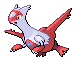
拉帝亚斯Lv.35 · 龙 / 超能力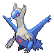
拉帝欧斯Lv.35 · 龙 / 超能力↓ 本篇到此结束：继续下一页
原文：Bulbapedia《Walkthrough:Pokémon HeartGold and SoulSilver/Part 30》（修订版本 4453116，），作者见原文页面历史。本页由 Eli 的杂货间翻译为中文，并有改动（重新排版、精简部分图注）。原文与译文均以 CC BY-NC-SA 2.5 授权。配图来自原站，版权归原作者与游戏厂商；地图截图和人物图来自 Bulbagarden Archives，游戏画面版权归 Nintendo / Game Freak / The Pokémon Company。